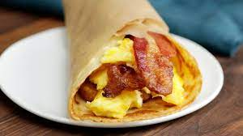

Eggs, bacon and a hash brown, all slathered in maple butter and warmly hugged in a thin pancake wrap.
Ingredients
Wrap Filling
- 4 hashbrown patties
- 8 strips bacon
- 4 tablespoons butter, divided
- 1 1/2 teaspoons salt, divided
- 8 large eggs
- 1 cup shredded cheese
- 4 tablespoons maple butter
- 2 tablespoons maple syrup
Pancake Wraps
- 2 large eggs
- 1/4 teaspoom vanilla
- 1/4 teaspoon salt
- 1 cup milk, divided
- 1 cup all purpose flour
- 1/2 tablespoon butter
Steps
Wrap Filling
- Preheat oven to 425 dgree. Line 2 baking sheets with parchment paper.
- Place 4 hash brown patties on parchment
and bake until golden, approx 20 to 25 minutes.
Place strips of bacon on another sheet and bake until
crispy, approx 20 minutes.
- While bacon and hash browns are baking, prepare the remaining ingredients for the wraps.
- Crack eggs into a medium-sized bowl with the remaining salt, and whisk until yolks are broken and eggs are just combined.
- In a large nonstick pan, melt the remaining tablespoons of butter over medium heat
- Pour eggs into the warm pan and turn heat down to medium-low.
- Cook eggs very slowly, swirling them in the pan using a wooden spoon or spatula. Eggs are done when they look silky, have come together and are still a little wet.
- Turn off the heat and add cheese
- Mix just to combine
- Set aside
Pancake Wraps
- In a medium-sized bowl, whisk eggs until lightly beaten.
- Add vanilla, salt and 1/3 cup of the milk, and stir until combined.
- Add flour and whisk until smooth
- While whisking, add the remaining milk. Batter should be thick and smooth.
- Heat a 10-inch pan on medium-high and coat with butter.
- Drop approximately 2/3 cup of batter onto pan and cook until golden. You will start to see bubbles form on the top of the dough when it is close to flip time.
- Flip over and repeat until golden
- Keep pancakes wamr on a plate until ready to assemble
- to assemble wraps: Spread maple butter in the middle of each pancake and place a hash brown on top.
- Place a quarter of the scrabled eggs on each hash brown
- Layer bacon over the eggs and drizzle with maple syrup
- secure wraos in parchment until serving. They will keep up to a day in the fridge.
- Reheat in the oven or microwave before serving